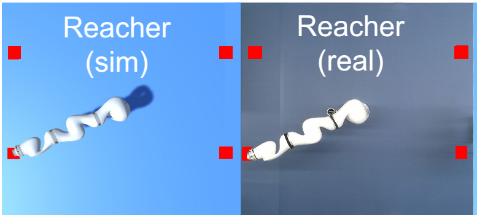

Method at a glance
- Pretrain robustlyLearn an actor plus reward and cost critics in domain-randomized simulation.
- Measure parameter importanceEstimate a diagonal Fisher information matrix from policy rollouts.
- Adapt safelyOptimize task performance and safety after transfer while regularizing important actor parameters.
Schematic summary of the project workflow.
Why adapt after transfer?
A policy trained across many simulated system variations can transfer robustly yet remain inefficient on the particular physical robot it encounters. Leaving it fixed also limits its ability to respond when dynamics or task conditions change. SCDA investigates deployment-time policy adaptation while controlling the risks of exploration and catastrophic forgetting.
The coauthored study evaluates a KUKA LBR iiwa 14 manipulator on reach-and-balance and grasping tasks. Safety is represented explicitly through joint-limit and collision-related costs rather than being folded entirely into a single task reward.
Safe optimization and continual learning
The learning system contains a stochastic actor and separate reward and cost critics. In the reported implementation, each network is a multilayer perceptron with two hidden layers of 64 units. The actor predicts a Gaussian action distribution; the two critics estimate performance and safety-related returns.
Pretraining uses PCRPO to balance reward and safety optimization in randomized simulation. Afterward, policy rollouts estimate a diagonal Fisher information matrix. During adaptation, an Elastic Weight Consolidation-style penalty discourages changes to actor parameters that were important to the pretrained policy. The reward and cost critics continue adapting to the current system.
Tasks, observations, and training data
Training data consists of interaction rollouts from the VTPRL simulator and physical robot rather than a fixed image dataset. Domain randomization varies joint dynamics and observation noise. The real robot is controlled through the IIWA stack and ROS.
The reaching task uses a five-dimensional state containing Cartesian target error and two joint positions, with two joint-velocity actions. The grasping task uses an eleven-dimensional state with pose error and seven joint positions, and four end-effector velocity actions. A Robotiq three-finger gripper is used in the grasping experiment.
Evaluation and findings
The paper compares zero-shot transfer, domain adaptation, safe domain adaptation, continual domain adaptation, and the combined SCDA method. Evaluation separates improvement on the currently adapted target from retention on other targets, making the adaptation–forgetting trade-off visible.
For grasping, the paper reports real-robot success rising from 20% for zero-shot transfer to 60% with SCDA, averaged over five seeds; the corresponding realistic-simulation comparison is 20% to 40%. These are team-level paper results. The method assumes deployment shifts are covered by the pretraining randomization range, and safety during the initial simulation-learning phase is not guaranteed.
Project visuals



Related resources
Based on the coauthored SCDA paper and its implementation. Reported numerical results belong to the study as a whole; they are not attributed to one author's individual work.